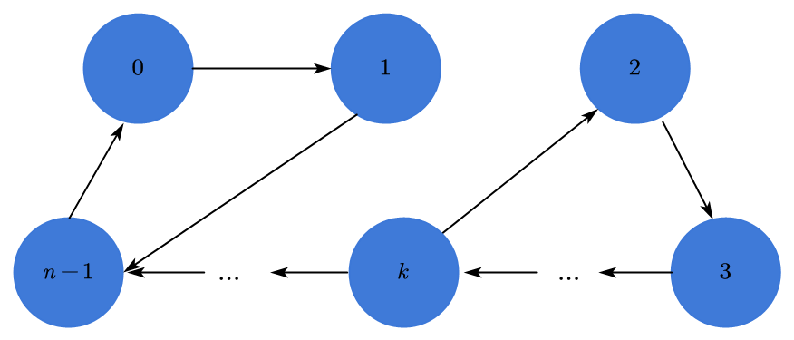
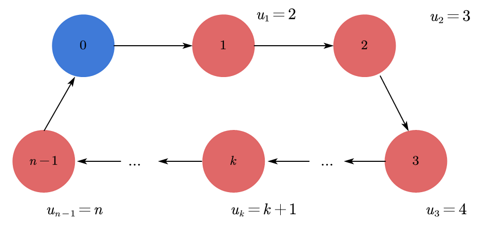

旅行商问题与最可靠路径问题
问题描述
- 旅行商问题（TSP）：从一点出发遍历其余点各一次再回到该点，要求总路径最短。
- 最可靠路径问题：图中的任一条边都有其可靠的概率，求任意两点间的最可靠路径。
问题建模
旅行商问题
若图中有$n$个点，我们可将它们编号为$0,…,n-1$（本文讨论都默认0为起点）,构造对应的邻接矩阵cnxn，令xnxn为0-1矩阵，若xij为1，则点$i$到点$j$属于当前选择路径的一部分，反之不属于。那么我们就可以很容易写出如下目标函数
显然，在此题中一条合法的路径应该是类似下方这样的回路。
这样的一条回路，其中各点的入度、出度都应为0。所以我们可以写出以下两条约束条件
但是仅仅满足这两个条件的路径可能并不是合法路径，因为它可能是多条回路的并集而非一个回路。如下图所示。

因此我们还需要第三个约束条件
其中$u_i$表示编号为$i$的点在当前选择路径的序号（该点为非起点，在本文中即非0）。加上这一约束条件，我们就可以确定合法路径，证明如下。
约束三的证明
必要条件

（注意：起点0并没有对应的$u$值，它不参与计算。）
对于一条合法路径，根据$x_{ij}$的取值，我们有两种情况要讨论
- 若$x_{ij}=1$，即点$i$与点$j$相邻，则$|u_i-u_j| \leq 1$，所以$u_i-u_j+n \times 1 \leq n-1$，成立。
- 若$x_{ij}=0$，即点$i$与点$j$不相邻，而$max \space u_i=n$，$min \space u_j = 2$，那么$max \space (u_i-u_j) + n \times 0=n-2 < n-1$，也成立。
因此，加上约束三后的约束条件是确定合法路径的必要条件。
- 充分条件

我们使用反证法。满足前两个约束的非法路径肯定是多条回路的并集，我们选择不包含起点的某个回路来讨论。比如我们选中上图的右回路，我们假定其中各点对应$u$值如图所示（其实对应$u$值具体为多少并不重要，只要是连续的即可）。我们可以写出以下式子：
全部式子加和，可得
显然，该式不成立。因此，加上约束三后的约束条件是确定合法路径的充分条件。
综上，加上约束三后的约束条件是确定合法路径的充分必要条件。
最可靠路径问题
对一个图G< V, E >，其任意一条边$e_i \in E$都有其可靠的概率$p_i$，任意两点的最可靠路径我们的目标函数大致可以写成
这个最大值其实并不好求，我们可以将其转化为最短路径问题。
令各边长为$l_i = log_2 \frac{1}{p_i}$，$p_i$越大，$\frac{1}{p_i}$就越小，由于$log$函数是单调递增的函数，那么$l_i$也就越小。
即，我们的目标函数变为
这就完成了从最可靠路径问题到最短路径问题的转化。求解最短路径的方法多样，就不在此多加探讨了。
本博客所有文章除特别声明外，均采用 CC BY-SA 4.0 协议 ，转载请注明出处！